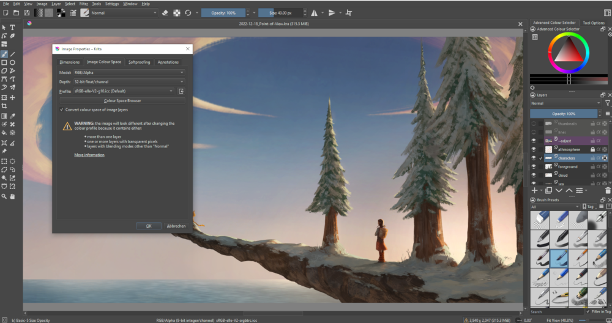

After rising from the ashes, Krita has become an almost unique application focused on natural painting, like CorelPainter. Using a brushes metaphor on screen, it has some innovative and quite interesting features like the ability to emulate the way painting colors mix and dry on canvas, a filters gallery to display previews of each filter, layer features you'll otherwise only find in Photoshop and the ability to open PSD files even Photoshop can't open. You can also use Krita to convert HDR images into a format that works in a print workflow.
That alone would make Krita worth adding to your DTP toolbox for artwork, but the major bonus for Scribus users is its versatile handling of a large number of file formats and color spaces. Krita not only handles RGB, CMYK, and Greyscale (up to 32-bit) using the same littleCMS color management engine as Scribus, but also color models other than RGB and CMYK, like XYZ (used in the film industry). Krita fully supports colour-managed RGB to CMYK conversion in a simple and easy-to-use manner and can also convert 16 bit images into 8 bit for import into Scribus. (Scribus doesn’t support 16 bit images yet.)
As an extra bonus, user support and feedback from the Krita developers is superb, which, along with its other qualities, is one of the reasons for the role of Krita in professional Hollywood productions.
 |